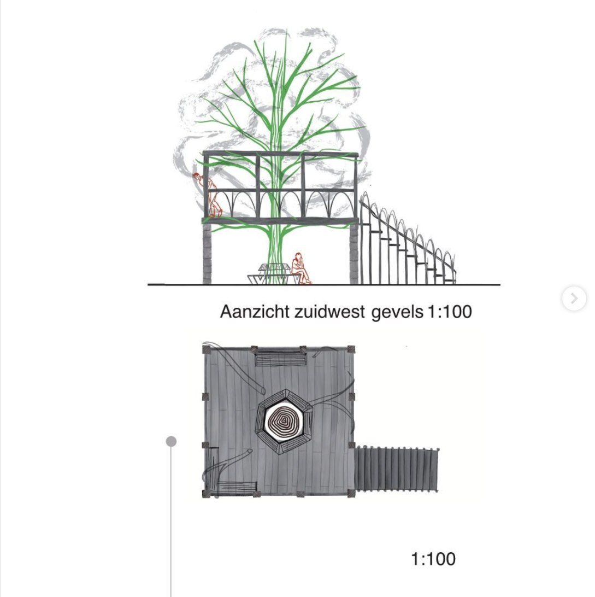

Juni 2024 — Msc2 Van gezel tot meester, TU Delft
In dit tweeweekse project was de opdracht helder: ontwerp een 100 meter lang gebouw met een doorsnede van 7 bij 7 meter op de TU Delft-campus, opgebouwd rond één duidelijk architectonisch thema. Het doel was niet alleen om een concept snel te vertalen naar heldere tekeningen door te schetsen en besluitvaardig te kiezen, maar ook om het eigen ontwerpproces beter te begrijpen en te versterken.
Het thema van dit project draaide om bouwen met bomen. Wat als je uitsluitend natuurlijke materialen zou gebruiken om te bouwen? Ik realiseerde me al snel dat dit niet zou resulteren in een traditioneel gebouw met één opleverdatum. In plaats daarvan zou het een levende structuur worden, die decennia- zo niet eeuwenlang blijft doorgroeien en veranderen. Een gebouw waarin geleerd wordt, maar dat ook zelf leert en verrijkt wordt door de kennis van de studenten die ermee omgaan.
Het 100 meter lange gebouw bestaat uit drie afzonderlijke onderdelen die zich elk in de tijd ontwikkelen: van boomgaard tot bomengalerij, van tramrails tot groene bunker, en van schuilen onder de boom tot wonen in de boom.
